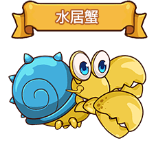

-
故事背景
相傳在史蓋窩克海岸附近有一名得到傳說中天才釣手「九瓶」真傳的少年，從小接受祖父的訓練，故年紀輕輕擁有一般人無法達到的高超釣魚技藝，深知各種魚類的生態。在海中大快朵頤享受垂釣成果。人們因那無人可敵的高超釣技，尊稱「釣魚王子」。 但這名少年卻在每逢月圓之夜，總是一人駕駛小船出海偷偷潛入海中，消失不見蹤影。然而當人們快遺忘他之時，卻帶著驚人財寶、稀有的海洋生物出現在眾人面前。深海傳出的優美歌聲，海中浮現的觸手身影，失落的大海秘寶，賦予力量覺醒。隨身攜帶三叉戟的鯊魚女孩，四處尋找獵物。史蓋窩克海那不為人知的祕密即將展現在各位觀眾面前。
-


深海傳出的優美歌聲，海中浮現的觸手身影。
王子、公主、魔女，愛恨糾葛的命運。
失落的大海秘寶，賦予力量覺醒。
隨身攜帶三叉戟的鯊魚女孩，四處尋找獵物。
史蓋窩克海那不為人知的祕密即將展現在各位觀眾面前。
史蓋窩克海
祕寶背景
傳說中，那是失落文明「亞特蘭迪斯」的偉大祕寶「神鰭海螺」。相傳只要付出智商，就可以獲得任何解答。具備不可思議的魔法之力。
幻獸介紹

種族
人魚
固有奧義
魅惑之音
效果：攻擊敵方1人，並同時魅惑敵人，被魅惑對象會幫助攻擊敵人，如達成指定條件，則魅惑回合數提升。
簡介
傳說中的生物，相傳擁有天籟般的歌喉，任何人聽了都會沉淪迷失在那美妙的聲音中無法自拔，故時常發生水手傾聽失神，使航船觸礁沉沒。在人魚世界中有一名年輕的人魚，對人類世界充滿了好奇心，時常在月圓之夜偷偷游到海面去，趴在礁岩上望著米司特里亞大陸。

種族
寄居蟹
固有奧義
永不落陷的孤城
效果：攻擊敵方1人，並同時提升自身格檔率、玩家獲得一次傷害減免。
簡介
強力的雙鉗、無論是沙灘、珊瑚礁、海岸線至深海海底的不同深度海水中隨處可見。

種族
魚人
固有奧義
海精靈之怒
效果：攻擊敵方1人，並同時回復玩家一定生命值，如達成指定條件，則恢復力提升。
簡介
夢幻的種族。外貌具有一半人和一半魚的特徵，可生活在陸地與海中。多數魚人族喜好和平，因受到海洋的祝福，故可以使用治癒系的能力，深受海洋世界生物的喜愛，天生擁有強健的體魄，故有些魚人族具有極高的戰鬥能力。

種族
海獵人
固有奧義
路亞九釣
效果：攻擊敵方1排，並同時加速，如達成指定條件，可立即重置幻獸本身學習技CB時間。
簡介
相傳在史蓋窩克海岸附近有一名得到傳說中天才釣手「九瓶」真傳的少年，從小接受祖父的訓練，故年紀輕輕擁有一般人無法達到的高超釣魚技藝，深知各種魚類的生態。在海中大快朵頤享受垂釣成果。人們因那無人可敵的高超釣技，尊稱「釣魚王子」